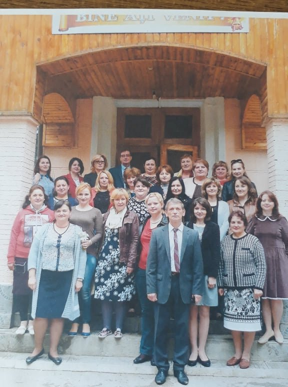

Despre noi
Școlile noastre din localitățile frumoase ale Moldovei și în acest an de studii 2020-2021 și-au reluat în mod firesc și tradițional cursul educațional. În ciuda pandemiei care ne dă peste cap programul educativ, conducătorii instituțiilor de învățământ au ales varianta optimă pentru a readuce elevii în clase, în bănci, în prezența dascălilor așa cum trebuie să se învețe la școală și așa cum se învață de sute de ani. Gimnaziul „Mihai Eminescu” din orășelul Ghindești, raionul Florești, este o instituție în care învață 290 de elevi. Înființată în 1956 ca școală medie, în 2002 fiind Liceul „Mihai Eminescu”, gimnaziul a rămas aceeași unitate de învățământ cu menirea de făclier, cu atât mai mult că poartă numele unui simbol național al culturii române – Mihai Eminescu. Această grijă ca lumina cunoștințelor să fie mereu aprinsă este o misiune asumată a întregului corp profesoral. Echipa managerială, alcătuită dintr-un trunchi de profesori – directorul Ilie Dogotari, profesor de fizică, cu grad didactic I, Arcadie Afonin, director adjunct pe instruire, profesor de limba și literatura română, cu grad didactic unu, și profesoara de istorie, grad didactic II, Natalia Sacenco, director adjunct pe educație, ține totodată și piept grijilor, problemelor pe care le împarte cu ceilalți membri ai casei didactice. Colectivul de profesori, spune managerul și profesorul Arcadie Afonin, este de vârstă medie, toți cu o bună pregătire și cu cerințe maxime față de ei și, respectiv, de la discipoli. Nu există diferență de instruire și educație dintre școala de la oraș sau de la sat. De altfel, la școala din Ghindești, printre sutele de discipoli, s-a instruit și renumita interpretă Nina Crulicovschi. Această mărturisire frumoasă o știm din interviuri chiar de la artistă. Din profesori buni ies și elevi pe potriva pregătirii lor profesionale. Afirmația cronicarului „din pom bun roadă bună o să iasă” e un vechi crez pe care copiii din Ghindești îl onorează prin muncă, prin interes față de carte, iar dovadă la acestea sunt activitățile pe care le fac elevii împreună cu profesorii lor. Școala organizează evenimente tematice, serbări și aniversări culturale, are parteneri educaționali din mediul social. De exemplu, ansamblul de dansuri „Bel art», condus de învățătoarea Elena Chercheja, este o ocupație la care elevii vin cu drag. Dansatori formați deja, aceștia au participat de nenumărate ori la diferite concursuri și serbări. În anul 2015 ansamblul a fost laureat al Festivalului Național „Constelația dansului și a muzicii». Pe copiii din Gimnaziul Ghindești îi pasionează sportul, disciplină care îi atrage, unii o câștigă ca performanță, iar alții o văd ca o profesie de perspectivă. Sportivii din secțiile de baschet și volei au adus mulți ani victorii însoțite de Premiul I. Gimnaziștii, susținuți de profesoarele lor de biologie, Ala Lelic, și de geografie, Lucia Tocan, sunt interesați ca lăcașul unde învață să arate frumos. Astfel, împreună cu organizația „Promotorii» și în colaborare cu alte organizații și APL au câștigat proiecte pentru amenajarea și salubrizarea localității.